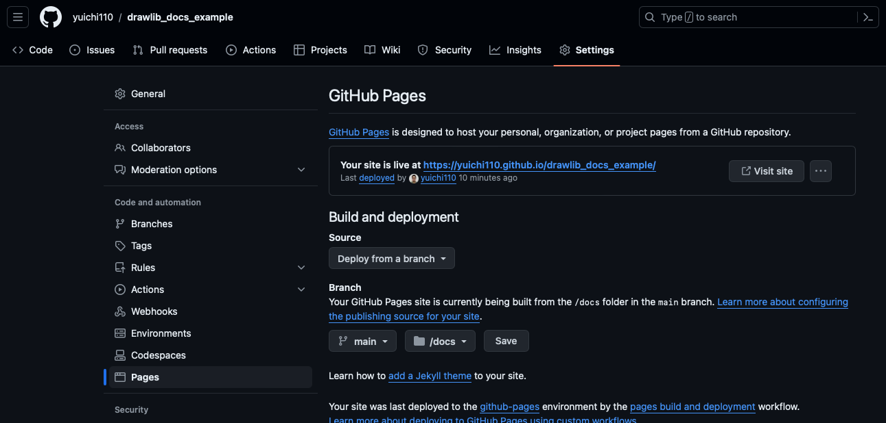

====================================
Example of Documentation Build Flow
Here is a high-level documentation build flow using Drawlib:

Build many images
In this document, we will explain our example documentation project and the step-by-step procedure for building it.
Example GitHub Repository
We have created an example GitHub repository that contains the source images and documentation for this demonstration. This repository will serve as the basis for building and creating documentation, which will then be published to the internet using GitHub Pages.
https://github.com/yuichi110/drawlib_docs_example
Tools Used
We will use the following tools for writing and publishing our documentation:
- Drawlib: For building images programmatically.
- Sphinx: For generating documentation with pre-built images.
- GitHub Pages: To publish the documentation online.
In our scenario of writing Python documentation, we have chosen Sphinx due to its popularity and suitability for structured documentation.
It requires understanding of reStructuredText (reST), which is similar to markdown but offers more complexity and flexibility for structuring comprehensive documentation pages.
This complexity allows for detailed and organized documentation creation.
An alternative to Sphinx could be MkDocs and Jekyll, which generates documentation from markdown files.
Both MkDocs and Jekyll are popular for creating static websites, including documentation sites.
Repository Structure
Here is the structure of the repository:
repository
├── .gitignore
├── .venv
├── LICENSE
├── README.md
├── requirements.txt
├── docs
| └── ... # Generated documentation files (HTML)
├── scripts
| └── ... # Scripts for building, checking, and publishing
├── source
│ ├── __init__.py
│ ├── _static
│ ├── _templates
│ ├── chapter01
│ ├── chapter0
│ ├── commons
│ ├── conf.py
│ ├── index
│ └── index.rst # Main entry point for documentation
└── staging
└── ... # Intermediate directory for checking generated documentation
Description of each files
-
.gitignore: Specifies files and directories to ignore in version control.
-
.venv: Virtual environment directory for Python dependencies.
-
LICENSE: License file for the repository.
-
README.md: Markdown file providing an overview of the repository.
-
requirements.txt: File listing Python dependencies.
-
docs/: Directory where generated HTML documentation files are stored.
-
scripts/: Directory containing scripts for various tasks related to documentation.
-
source/: Directory containing the source files for documentation.
- init.py: Initialization file (typically for Python modules).
- _static/: Static files directory for the documentation.
- _templates/: Templates directory for custom Sphinx templates.
- chapter01/, chapter02/: Directories for organizing documentation chapters.
- commons/: Directory for common resources used across documentation.
- conf.py: Configuration file for Sphinx.
- index.rst: Main entry point for the documentation, typically starting with index.
-
staging/: Temporary directory for checking generated documentation before moving to docs/.
Abstract Workflow
Here's the workflow for managing and publishing documentation:
- Image Build Process: Images are built first
- Documentation Build Process: Documentation is generated in the staging/ directory.
- Review: Newly generated documentation in staging/ is reviewed for any issues.
- Deployment: Once validated, the content from staging/ is moved to docs/, which is used for GitHub Pages publication.
- Publication: GitHub Pages can publish its new content after Git commit and push
Scripts
The scripts/ directory contains script files for each step of the workflow.
Whether adopting CI/CD or not, having these scripts helps facilitate local operations such as image and documentation generation.
Python Environment Setup
To build images and documentation, you need specific Python packages installed in a virtual environment to avoid conflicts. Here's a bash script that sets up the environment:
setup_python.sh
We created a bash script named setup_python.sh with the following content:
#!/bin/bash
set -e
# cd to repository root
cd "$(dirname "$0")"
cd ../
# delete python venv
deactivate || true
rm -rf .venv
# create venv and activate
python -m venv .venv
source .venv/bin/activate
# install python packages
pip install -U -r requirements.txt
At last of the script, installing python packages from requirements.txt.
requirements.txt
We created requirements.txt file with the following content:
drawlib == 0.1.*
sphinx == 7.2.*
sphinx-rtd-theme == 2.0.*
After running the setup script, if your Sphinx configuration (conf.py) is not ready, you need to prepare it using Sphinx commands. Please refere to sphinx documentation for details.
Building Images
The source directory serves as the root of your Sphinx project and contains both the Sphinx configuration files and the source files for your documentation. If you are not familiar to how to build many images with common style, please check foundation document first. We will skip Python code explanation at here.
For building images, we use script /scripts/build_images.sh
#!/bin/bash
set -e
# cd to project root directory
cd "$(dirname "$0")"
cd ../
# activate
source .venv/bin/activate
# build
drawlib ./source
For larger documentation projects, consider creating separate build scripts for specific chapters or sections.
For example, you can create scripts like scripts/build_images_chapter01.sh and scripts/build_images_chapter02.sh.
#!/bin/bash
set -e
# cd to project root directory
cd "$(dirname "$0")"
cd ../
# activate
source .venv/bin/activate
# build only chapter01
drawlib ./source/chapter01
After building the images, verify their correctness and quality before proceeding to build the documentation. This ensures that all images are correctly generated and meet your project's requirements.
Building Documentation
To compile your documentation using Sphinx, you can utilize the script script/build_docs.sh.
This script manages the compilation process, creating HTML files in the staging directory from source directory.
#!/bin/bash
set -e
# cd to project root directory
cd "$(dirname "$0")"
cd ../
# activate
source .venv/bin/activate
# delete last build target contents
rm -rf ./staging
# build to html
sphinx-build -a ./source ./staging
At the script, deletes the contents of the staging directory to remove any remnants from previous builds.
And then, executes sphinx-build -a ./source ./staging to generate HTML files from the source files in the source directory and store them in the staging directory.
Check Build Content of Directory staging
To check the contents of the staging directory, which contains the built HTML documentation from Sphinx, you can use a script like scripts/serv_staging.sh.
This script starts an HTTP server that hosts the staging directory locally and opens a web browser to view it automatically.
#!/bin/bash
set -e
open_browser_1sec_later() {
sleep 1
open http://localhost
}
# cd to doc root
cd "$(dirname "$0")"
cd ../
# activate
source .venv/bin/activate
# open browser later
open_browser_1sec_later &
# cd to html directory and start http server
cd ./staging
python -m http.server 80
After a brief moment, your default web browser should open with the locally hosted documentation from the staging directory.
You can navigate and inspect the documentation to ensure everything appears as expected before further steps like publishing.
GitHub Pages Settings
Configuring GitHub Pages for your repository allows you to host your Sphinx-generated documentation directly from your GitHub repository. If you haven't configured GitHub Pages for your repository yet, please configure it first.

Configure github pages
Move HTML to GitHub Pages Directory docs
To publish your Sphinx-generated documentation using GitHub Pages, you need to move the built HTML files from the staging directory to the docs directory.
Below is a script named deploy_from_staging_to_docs.sh that automates this process:
#!/bin/bash
set -e
# cd to doc root
cd "$(dirname "$0")"
cd ../
# delete old docs
rm -rf ./docs
# copy latest staging to docs
cp -r ./staging ./docs
# create .nojekyll
cd ./docs
touch .nojekyll
This script delete last HTML content first. And them move new HTML to GitHub Pages directory.
GitHub Pages uses Jekyll by default to build and serve static websites. However, Sphinx-generated documentation does not require Jekyll processing. By including a .nojekyll file in the docs directory, GitHub Pages skips the Jekyll build process, allowing your Sphinx-generated HTML to be served as-is.
Publishing Your Documentation
Once you have successfully moved the newly built HTML documents to the GitHub Pages directory (docs), the next step is to sync these changes with the GitHub remote server.
Before pushing changes to GitHub, commit the changes locally. After committing your changes locally, push them to the GitHub remote repository. Once git push completes, GitHub will automatically deploy the contents of the docs directory to your GitHub Pages site. You can access your published documentation using the GitHub Pages URL for your repository.
© 2026 drawlib by Yuichi Ito. Released under the Apache 2.0 License.